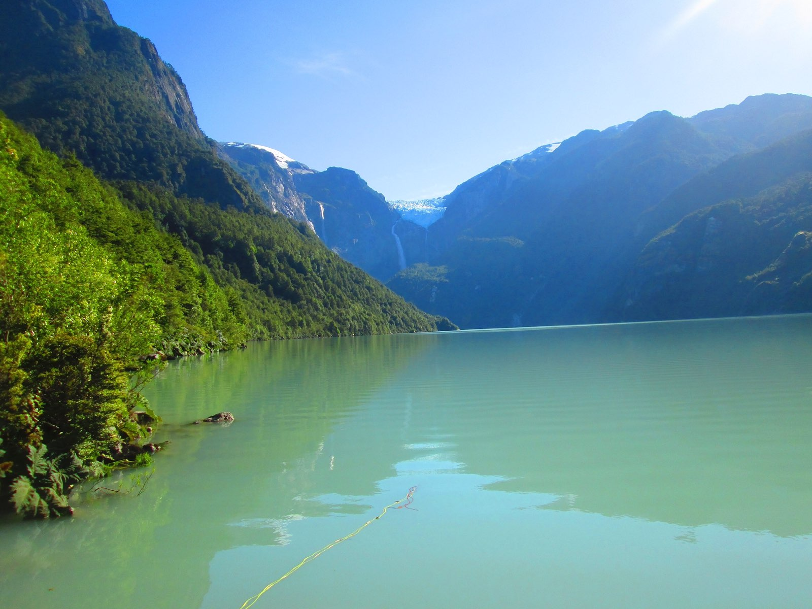

Some roads take you to a place; others are the place. The Carretera Austral, Chile's Route 7, belongs to the second kind. It links Puerto Montt with Villa O'Higgins past lakes, hanging glaciers, turquoise rivers and forests that seem to go on forever. Many call it the most beautiful drive in Chile, and a Carretera Austral road trip is one of the most rewarding ways to experience Patagonia.
This guide will help you plan: how long the road really is, which ferries you need, what is changing under the 2026–2030 paving plan, and what you should not miss around Coyhaique, the largest city in the Aysén Region.
Carretera Austral: history and length
The road opened to traffic in 1988. By 1996 it reached Puerto Yungay, and in 2000 the last 100 km to Villa O'Higgins, its end point, were opened.
You will find two figures for its length, and both are genuine:
- About 1,240 km from Puerto Montt to Villa O'Higgins: the historical figure, repeated by travel guides and encyclopedias.
- About 1,058 km: the figure given by Chile's Ministry of Public Works road agency (MOP-Vialidad) in April 2026, when it announced the paving plan. According to the same source, 614.5 km are paved (58%) and 443.5 km are still to be paved.
Which one should you use? For planning, go with the ministry's number, the most recent official figure. Other 2026 sources give different paved percentages (45%, for instance), so do not be surprised by conflicting numbers. What matters on the ground is that a significant share of the road is still gravel, and that shapes your speed, your choice of vehicle and your timings.

Ferries along the way
To drive the full Carretera Austral you need to cross by ferry at three points:
| Crossing | Approximate duration | Note |
|---|---|---|
| Caleta La Arena–Caleta Puelche | About 30 minutes | Near Puerto Montt |
| Hornopirén–Caleta Gonzalo | About 5 hours | Seasonal |
| Puerto Yungay–Río Bravo | About 50 minutes | Free |
Check timetables and book ahead, especially the Hornopirén–Caleta Gonzalo crossing, which only runs in season. If you would rather skip the northern section, fly into Balmaceda and start in Coyhaique: see our guide on how to get to Coyhaique.
The 2026–2030 paving plan
On 30 April 2026, President Kast and Public Works Minister Martín Arrau announced the "Ruta Austral: Soberanía que conecta" plan. These are the key points, according to the ministry:
- Investment of around CLP 800 billion between 2026 and 2030: CLP 758,858 million from the ministry and CLP 44,940 million from the regional government.
- Works on about 244 to 250 km, from the regional boundary to Lake Juncal, through 23 projects.
- 150.4 km of permanent paving: 49.7 km already under way and 100.7 km in 9 new sections.
- Restarting the Palena and Rosselot bridges, expanding the port at Puerto Yungay and two new ferries for lakes General Carrera and O'Higgins.
Some work has already begun. In August 2026, paving started on 16.2 km between Bahía Murta and the El Belga Bridge, on the way to Puerto Río Tranquilo. The El Manso Bridge was 16% complete, with completion expected in April 2028. For travellers this means two things: the road will get easier year by year and, in the meantime, you should allow extra time for roadworks.
Highlights near Coyhaique
Coyhaique makes a good base for the central section of the route. These are the main stops, with approximate distances from the city:
- Coyhaique National Reserve, about 5 km away: short, easy trails such as Laguna Verde, ideal for your first day.
- Río Simpson National Reserve, at km 37 of the road to Puerto Aysén.
- Cerro Castillo National Park: the park office is at km 57 of Route 7 South, and the village of Villa Cerro Castillo is about 93 to 100 km away, roughly an hour and a half. Our guide to hiking Cerro Castillo covers the trails.
- Puerto Río Tranquilo and the Marble Caves, about 220 km south (sources range from 215 to 233 km). Everything you need is in our Marble Caves guide.
- Patagonia National Park, about 315 km south.
Queulat National Park and the Hanging Glacier
To the north, 165 km from Coyhaique on Route 7, lies Queulat National Park. Created in 1983, it protects 154,093 hectares in the municipalities of Cisnes and Lago Verde; the nearest village is Puyuhuapi. Its signature sight is the Ventisquero Colgante, or Hanging Glacier, which clings to the rock and spills in waterfalls towards Laguna Témpanos.
- Laguna Témpanos: 600 m, about 20 minutes.
- Morrena: 3.2 km, about 2 hours.
- Laguna Los Pumas: 5.2 km, about 5 hours; closed June to September.
There is no mobile signal and no food for sale in Queulat, so bring what you need. The campsite in the Ventisquero Colgante sector has been closed since 17 April 2026 until further notice. Check fees and opening hours at pasesparques.cl.

Best time for the trip
There is no official date, but tourism guides and the parks agree that high season runs from November or December to March. That is when seasonal ferries, campsites and trails are operating. Several CONAF trails close from May to September, so travelling outside those months is possible, just with fewer options.
Frequently asked questions
How long is the Carretera Austral?
The historical figure is about 1,240 km from Puerto Montt to Villa O'Higgins. MOP-Vialidad reported about 1,058 km in April 2026, with 58% paved.
Is the Carretera Austral paved?
Partly. According to the ministry, 614.5 km are paved and 443.5 km are still to be paved. The 2026–2030 plan adds 150.4 km of permanent paving.
When is the best time to drive it?
From November or December to March, when seasonal ferries, campsites and trails are running.
What is there to see near Coyhaique?
Coyhaique National Reserve, Río Simpson National Reserve, Cerro Castillo National Park, Queulat National Park to the north and the Marble Caves to the south.
A place of your own by the road
Driving the Carretera Austral tends to leave you wanting to stay. Inmobiliaria El Roble has two projects in Aysén, with legal advice throughout the purchase process and interest-free direct financing: Horizontes de Mañihuales, 4 plots of 0.53 to 1 ha on the Mañihuales River, with access by public road, 1 hour 10 minutes north of Coyhaique and 10 minutes from Villa Mañihuales, sold off-plan while SAG approval is obtained; and Parcelas Don Guillermo, on the Emperador Guillermo River, right on the Carretera Austral, where a single plot remains: B11, of 9,500 m². See all our projects.
Sources
- Vialidad MOP, 30-04-2026
- Cooperativa, 30-04-2026
- Emol, 23-05-2026
- Ex-Ante / T13, 27-03-2026
- BioBioChile, 26-08-2026
- Wikipedia, Carretera Austral
- Chile.travel, Carretera Austral
- CONAF, Queulat National Park
- CONAF, Río Simpson National Reserve
- CONAF, Coyhaique National Reserve
- CONAF, Cerro Castillo National Park
- CONAF, Patagonia National Park
- Chile.travel, Cerro Castillo trekking